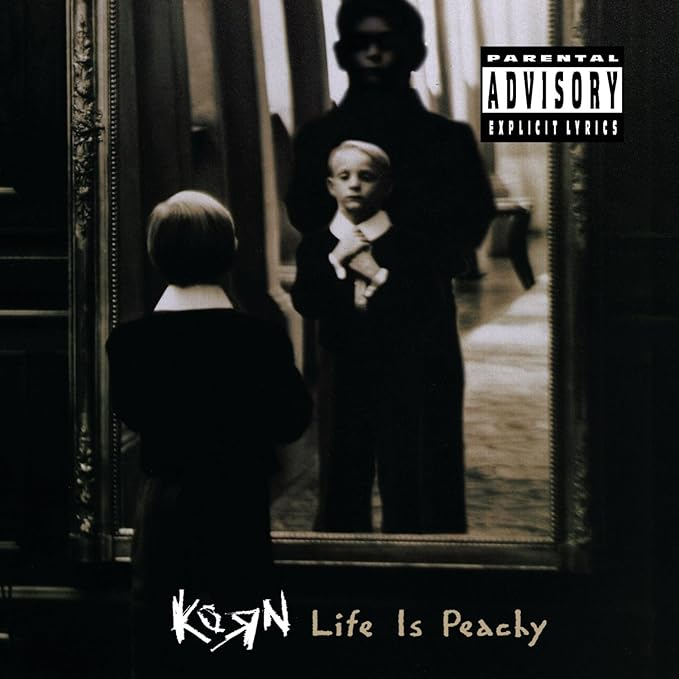
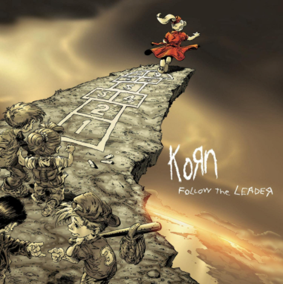
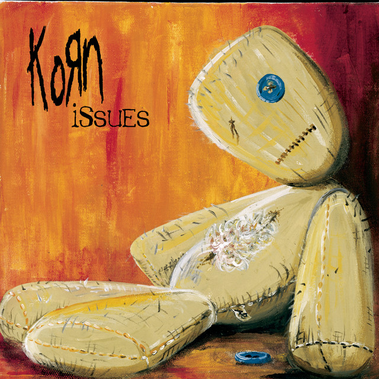
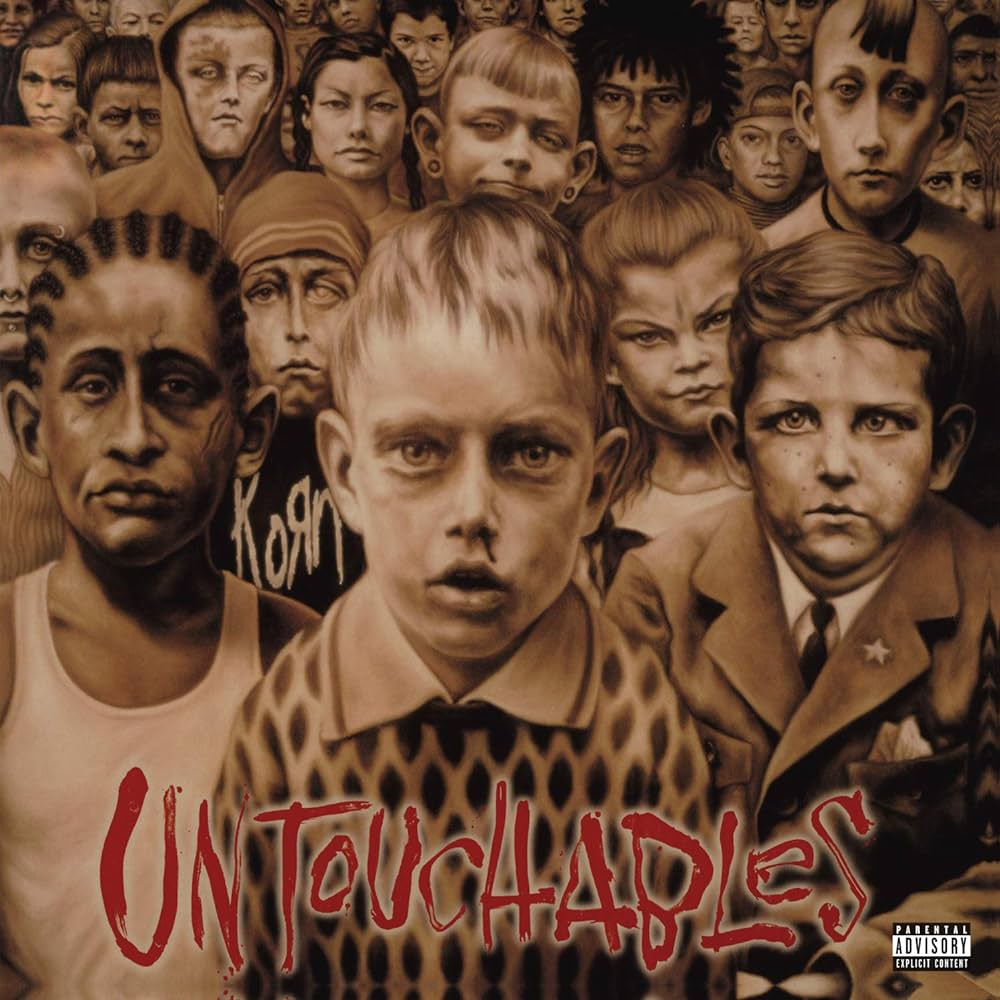
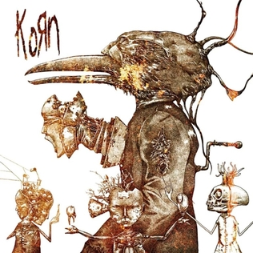
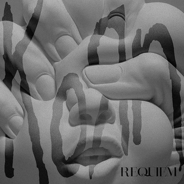
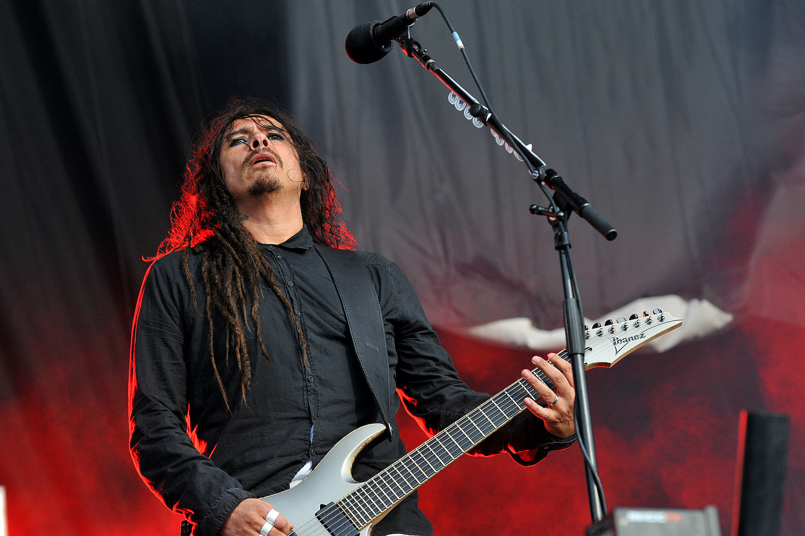
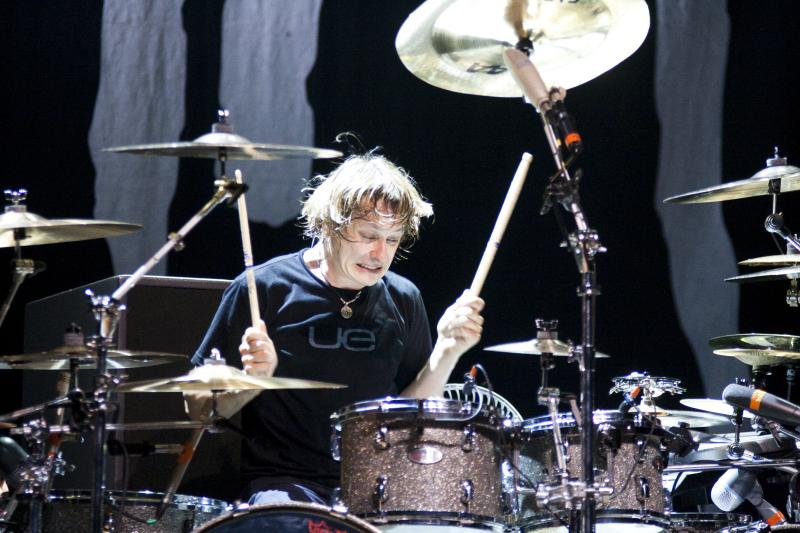

Sobre a Banda Korn
Korn (estilizado como KoRn ou KoЯn) é uma banda de nu metal de Bakersfield, Califórnia. Frequentemente levam o crédito de ser os pioneiros do gênero nu metal e ter inspirado a onda de nu metal, metal alternativo e influenciado bandas de rapcore no meio dos anos 1990 e começo do século XXI, ajudando, em particular, Limp Bizkit (banda que foi descoberta pelo Korn) e junto a eles disseminaram o nu metal pelo mundo todo.
Discografia:
•Korn
•1994

•Peachy
•1996

•Follow the leader
•1998

•Issues
•1999

•Untouchables
•2002

•Take a look in the mirror
•2003

•See you on the OT
•2005

•Untitled
•2007

•The paradigm Shift
•2013

•The Nothing
•2019

•Requiem
•2022

Membros
Vocalista
Jonathan Davis: Ele é conhecido por sua voz distinta e sua presença de palco energética. Davis é um dos membros fundadores da banda, que foi formada em 1993.
Guitarrista
James "Munky" Shaffer: Um dos membros fundadores, Munky é conhecido por seu estilo de tocar único e por ajudar a definir o som característico da banda.
Guitarrista
Brian "Head" Welch: Também um membro fundador, Head saiu da banda em 2005 para seguir uma carreira solo e se dedicar à sua fé cristã, mas retornou em 2013.
Baterista
Ray Luzier: Ele se juntou à banda em 2007, substituindo o baterista original David Silveria, que deixou a banda em 2006. Luzier trouxe sua própria energia e estilo à banda, contribuindo para os álbuns e performances ao vivo de Korn desde então.
PROXIMOS SHOWS!
Katovice, Polônia
30/07/2024
Hala widowiskowo-sportowa "Spodek" w Katowicach
Berlim, Alemanha
01/08/2024
Zitadelle Spandau
Amesterdã, Países Baixos
04/08/2024
AFAS Live
A banda possui sete álbuns que atingiram certificação de platina nos EUA, e dez estreias consecutivas no top 10 do Billboard 200, tendo atingido o topo da parada musical com os discos Follow the Leader e Issues. Até ao momento, os Korn já tiveram 7 nomeações para o Grammy Awards, tendo ganho 2 vezes.